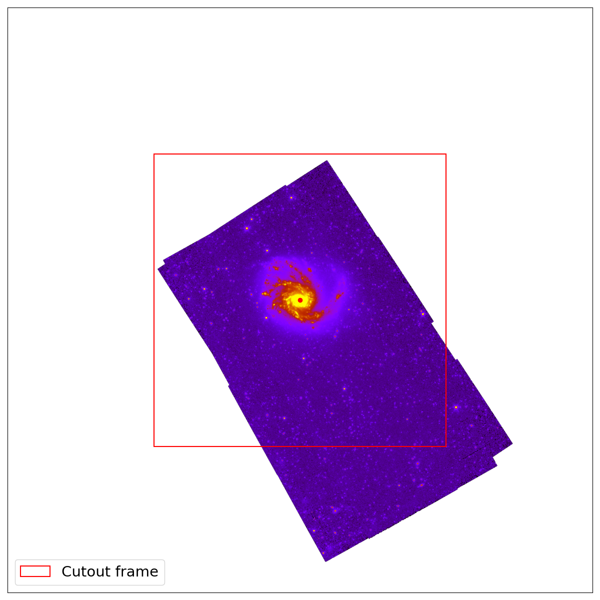
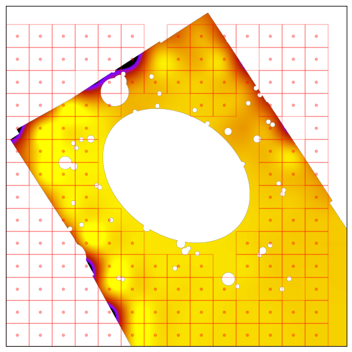
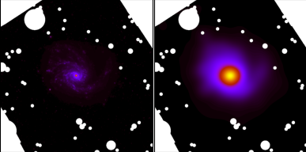
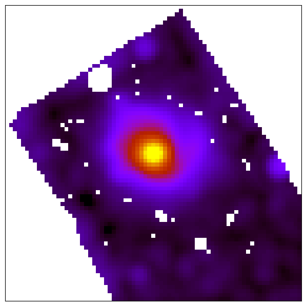

HIP is a multi-wavelength homogenization framework, with support for error propagation. HIP allows the homogenization of multiple images of the same source at once. Each HIP pipeline is made up of a stack of sequential steps where the output of one step is piped to the next. Each step has a unique module name and configuration parameters. Once defined, the pipeline is then configured and run on all input images to produce both output and propagated error images.

Homogenization example with HIP |
HIP pipelines and data sources are defined in a configuration file using YAML, a human-readable data serialization language. HIP configuration files consist of the following main sections: meta, config, data, and pipeline.
Meta
The meta section is used to define meta-data. Elements of this section will be used for logging purposes. The meta section is defined by two fields: name, and description.
name:
* Validation: Not required, defaults to "Default".
* Type: string
* Description: Name of pipeline
description:
* Validation: Not required, defaults to "Default".
* Type: string
* Description: Description of pipeline
|
meta: name: Pipeline for IMEGIN M99 description: PACS1 and MIPS1 to SPIRE3 for M99 |
Config
The config section is used to define the run mode. Modes define whether or not to propagate uncertainties, and if yes, how to do so. The config section is defined with two fields: mode, and niter.
mode:
* Validation: Required.
* Type: Literal string (Single Pass, Monte-Carlo, Inner).
* Description: Single Pass mode does not propagate uncertainties, Monte-Carlo mode propagates uncertainties using a Monte-Carlo loop, and Inner mode allows to pipe the result of one pipeline into another (Check sections Subtract, Multiply, Examples for more informarmation).
niter:
* Validation: Only valid and required for "Monte-Carlo" mode.
* Type: Positive integer larger than one.
* Description: Number of iterations for "Monte-Carlo" mode.
|
config: mode: Monte-Carlo niter: 10000 |
Data
The data section is used to define the astronomical body and the bands used for the pipeline. The data section is defined with three fields: body, geometry, and bands.
body:
* Validation: Required.
* Type: String
* Description: Name of astronomical source.
|
data: body: NGC4254 |
The geometry and bands fields are by themselves other sections within the data section.
ra:
* Validation: Only required if "body" not in DustPedia, else defaults from catalogue.
* Type: Float
* Description: Right ascension in degrees.
dec:
* Validation: Only required if "body" not in DustPedia, else defaults from catalogue.
* Type: Float
* Description: Declination in degrees.
positionAngle:
* Validation: Only required if "body" not in DustPedia, else defaults from catalogue.
* Type: Float
* Description: Position angle in degrees.
axialRatio:
* Validation: Only required if "body" not in DustPedia, else defaults from catalogue.
* Type: Float
* Description: Axial ratio.
semiMajorAxis:
* Validation: Only required if "body" not in DustPedia, else defaults from catalogue.
* Type: Float
* Description: Semi-major axis in arcseconds.
inclination:
* Validation: Only required if "body" not in DustPedia, else defaults from catalogue.
* Type: Float
* Description: Inclination in degrees.
|
data: geometry: ra: 184.70655 dec: 14.41641 positionAngle: -35.744970233 axialRatio: 1.34709868225 semiMajorAxis: 421.336905129 inclination: 20.1 |
input:
* Validation: Required.
* Type: String
* Description: Relative path towards input data fits file.
output:
* Validation: Required.
* Type: String
* Description: Relative path towards output directory.
error:
Not required, only valid for 'Monte-Carlo' and 'Inner' modes. If not defined then defaults to the Median Absolute Deviation (MAD) of the input.
* Validation: Required.
* Type: String
* Description: Relative path towards input error fits file.
name:
* Validation: Required.
* Type: String
* Description: Name of band.
calError:
* Validation: Not required, defaults to zero.
* Type: Float
* Description: Photometric calibration error in percentage.
resolution:
* Validation: Only required if name does not follow HerBIE nomenclature, else defaults from the table below.
* Type: Float
* Description: Full-width at half-maximum (FWHM) in arcsec.
|
data: bands: - input: data/inputs/NGC4254/NGC4254_PACS1.fits output: data/outputs/NGC4254/ calError: 5.4 name: PACS1 - input: data/inputs/NGC4254/NGC4254_MIPS1.fits error: data/inputs/NGC4254/Spitzer_24_Error.fits output: data/outputs/NGC4254/ name: MIPS1 - input: data/inputs/NGC4254/M99_NIKA2_1_SCANAM.fits error: data/inputs/NGC4254/NIKA_Error.fits output: data/outputs/NGC4254/ name: NIKA2_1_SCANAM resolution: 12 calError: 5 |
More details on the HerBIE nomenclature:
The HerBIE nomenclature is a system of names for the most used bands within the IMEGIN collaboration. In case the name field is any of the following, then the resolution will be defined as follows.
| Facility | Effective wavelength | HerBIE name | Resolution FWHM (arcsec) |
|---|---|---|---|
| GALEX | 153 nm | GALEX_FUV | 4.3 |
| GALEX | 227 nm | GALEX_NUV | 5.3 |
| SDSS | 353 nm | SDSS1 | 1.3 |
| SDSS | 475 nm | SDSS2 | 1.3 |
| SDSS | 622 nm | SDSS3 | 1.3 |
| SDSS | 763 nm | SDSS4 | 1.3 |
| SDSS | 905 nm | SDSS5 | 1.3 |
| 2MASS | 1.24 \(\mu\)m | 2MASS1 | 2.0 |
| 2MASS | 1.66 \(\mu\)m | 2MASS2 | 2.0 |
| 2MASS | 2.16 \(\mu\)m | 2MASS3 | 2.0 |
| WISE | 3.4 \(\mu\)m | WISE1 | 6.1 |
| WISE | 4.6 \(\mu\)m | WISE2 | 6.4 |
| WISE | 12 \(\mu\)m | WISE3 | 6.5 |
| WISE | 22 \(\mu\)m | WISE4 | 12 |
| Spitzer | 3.6 \(\mu\)m | IRAC1 | 1.66 |
| Spitzer | 4.5 \(\mu\)m | IRAC2 | 1.72 |
| Spitzer | 5.8 \(\mu\)m | IRAC3 | 1.88 |
| Spitzer | 8 \(\mu\)m | IRAC4 | 1.98 |
| Spitzer | 24 \(\mu\)m | MIPS1 | 6 |
| Spitzer | 70 \(\mu\)m | MIPS2 | 18 |
| Spitzer | 160 \(\mu\)m | MIPS3 | 38 |
| Herschel | 70 \(\mu\)m | PACS1 | 9 |
| Herschel | 100 \(\mu\)m | PACS2 | 10 |
| Herschel | 160 \(\mu\)m | PACS3 | 13 |
| Herschel | 250 \(\mu\)m | SPIRE1 | 18 |
| Herschel | 350 \(\mu\)m | SPIRE2 | 25 |
| Herschel | 500 \(\mu\)m | SPIRE3 | 36 |
| Planck | 350 \(\mu\)m | HFI1 | 278 |
| Planck | 550 \(\mu\)m | HFI2 | 290 |
| Planck | 850 \(\mu\)m | HFI3 | 296 |
| Planck | 1.38 mm | HFI4 | 301 |
| Planck | 2.10 mm | HFI5 | 438 |
| Planck | 3 mm | LFI1 | 581 |
| Planck | 4.26 mm | LFI2 | 799 |
| Planck | 6.81 mm | LFI3 | 1630 |
| Planck | 10.6 mm | LFI4 | 1940 |
| IRAM 30m | 1.15 mm | NIKA2_1 | 12 |
| IRAM 30m | 2 mm | NIKA2_2 | 18 |
Pipeline
The pipeline section is used to define the homogenization pipeline. The pipeline section is defined with three fields: step, diagnosis, and parameters. Every step section can define multiple non-repeating bands using lists as seen in the examples section.
step:
* Validation: Required.
* Type: Literal string (hip.cutout, hip.foregroundMask, hip.skySubtract, hip.degrade, hip.regrid, hip.integrate, core.subtract, core.multiply)
* Description: Name of step.
diagnosis:
* Validation: Not required, defaults to False.
* Type: Boolean
* Description: Enable/Disbale diagnosis plots.
The parameters section is by itself another section within the pipeline section. The parameters section is defined with different fields for each choice of step. The following are the possible fields of parameters for each step:
This step allows to perform a cutout the data centered at ra, dec as defined in geometry. This step is defined with three fields: band, raTrim, and decTrim.
band:
* Validation: Required.
* Type: Literal string
* Description: Name of input band, all if all of them.
raTrim:
* Validation: Required.
* Type: Float
* Description: Size of cutout along the x axis in arcminutes.
decTrim:
* Validation: Required.
* Type: Float
* Description: Size of cutout along the y axis in arcminutes.
|
pipeline: - step: hip.cutout diagnosis: True parameters: - band: MIPS1 raTrim: 15 decTrim: 15 |
|

Cutout example for MIPS1 image of NGC4254. The cutout region was defined to be 15x15 arcmins as shown in the example above. |
This step allows to mask foreground objects within a specific area centered at ra, dec as defined in geometry. This step is defined with four fields: band, raTrim, decTrim, and maskFactor.
band:
* Validation: Required.
* Type: Literal string
* Description: Name of input band, all if all of them.
raTrim:
* Validation: Required.
* Type: Float
* Description: Size of area along the x axis in arcminutes.
decTrim:
* Validation: Required.
* Type: Float
* Description: Size of area along the y axis in arcminutes.
maskFactor:
* Validation: Not required, default to one.
* Type: Float
* Description: Factor multiplier for mask radius.
|
pipeline: - step: hip.foregroundMask diagnosis: True parameters: - band: MIPS1 raTrim: 15 decTrim: 15 maskFactor: 1 |

Foreground masking for MIPS1 image of NGC4254. The foreground masking was defined to be 15x15 arcmins with a maskFactor of 1 as seen in the example above. |
More details on the choice of maskFactor:
The maskFactor scales the size of the masked regions around foreground sources. It multiplies the base radius corresponding to the object's magnitude as seen in the following table. This is useful to adjust how aggressively pixels near these objects are masked.
| Magnitude Threshold | Base radius (arcseconds) |
|---|---|
| <13.5 | 4.6 |
| <14.0 | 3.0 |
| <15.5 | 2.1 |
| <16.0 | 1.4 |
| <18.0 | 1.15 |
| <40.0 | 0.7 |
This step allows to estimate and subtract the background within an aperture as defined by geometry. The background is estimated using 3 sigma-clipped statistics in each box of a grid that covers the data. The high-resolution background map is then calculated by cubic interpolation of the low-resolution background map. This step is defined with two fields: band, and cellFactor.
band:
* Validation: Required.
* Type: Literal string
* Description: Name(s) of input band(s), all if all of them.
cellFactor:
* Validation: Not required, defaults to one.
* Type: Positive integer
* Description: Factor multiplier for grid size.
|
pipeline: - step: hip.skySubtract diagnosis: True parameters: - band: all cellFactor: 10 |
 Sky background interpolation for MIPS1 image of NGC4254. |
More details on the choice of cellFactor:
The background interpolation operation is done with the Background2D object from photutils. First, a low-resolution background map is estimated within boxes of a grid, and then interpolated to create the final background map to be subtracted. The cellFactor is an integer multipler factor of the instrument's resolution per box of the grid. A larger cellFactor results in larger boxes, and therefore a coarser grid. A fine grid is not necessarily the optimal choice, as one would want to interpolate the background while also capturing its large-scale structure. We recommend selecting the cellFactor such that the box size matches the scale of the galaxy.
|
 Grid structure corresponding to a cellFactor of 10 for MIPS1. |
This step allows to degrade an image to a target lower resolution. This step is defined by can be done either by providing a kernel to be applied, or by specifying the target resolution. The first method allows the user to use a specific kernel for the degradation, whereas the second method constructs a Gaussian kernel with the correct full-width-half-maximum to degrade the image to the target resolution. This step can be defined with three fields: band, target, and kernel.
band:
* Validation: Required.
* Type: Literal string
* Description: Name(s) of input band(s), all if all of them.
kernel:
* Validation: Valid and required if target is not defined.
* Type: String
* Description: Relative path towards kernel FITS file.
target:
* Validation: Valid and required if kernel is not defined.
* Type: Positive integer
* Description: Target resolution in arcseconds.
|
pipeline: - step: hip.degrade diagnosis: True parameters: - band: MIPS1 kernel: kernels/Kernel_LowRes_MIPS1_to_SPIRE3.fits |
|

Degradation from MIPS1 with a resolution of 6 arcseconds to SPIRE3 with resolution of 36 arcseconds for NGC4254. |
This step allows to reproject an image to a target WCS projection. This step can be defined with two fields: band, and target.
band:
* Validation: Required.
* Type: Literal string
* Description: Name(s) of input band(s), all if all of them.
target:
* Validation: Required.
* Type: String
* Description: Relative path towards a target FITS file.
|
pipeline: - step: hip.regrid diagnosis: True parameters: - band: MIPS1 target: data/inputs/NGC4254/NGC4254_SPIRE3.fits |
|

Result of regridding MIPS1 with pixel size 1.3 arcseconds to a pixel size of 12 arcseconds as of SPIRE3 for NGC4254. |
This step allows to perform aperture photometry over an elliptical aperture defined by the semi-major axis of the galaxy. This step can be defined with two fields: band, and sizeFactor.
band:
* Validation: Required.
* Type: Literal string
* Description: Name(s) of input band, all if all of them.
sizeFactor:
* Validation: Not required, defaults to one.
* Type: Float
* Description: Factor multiplier for size of aperture.
|
pipeline: - step: hip.integrate diagnosis: True parameters: - band: MIPS1 sizeFactor: 2 |

Elliptical aperture with sizeFactor of 1 to perform aperture photometry on MIPS1 image of NGC4254. |
This step allows to subtract one result from another. This step can be defined with five fields: band, target, resultOf, unit, and biasFactor.
band:
* Validation: Required.
* Type: Literal string
* Description: Name(s) of input band, all if all of them.
target:
* Validation: Valid and required if biasFactor and resultOf not defined.
* Type: String
* Description: Relative path towards a target FITS file.
biasFactor:
* Validation: Valid and required if target and resultOf not defined.
* Type: Float
* Description: Constant bias to be subtracted.
unit:
* Validation: Not required.
* Type: String
* Description: Change the unit in the header after subtraction. This string needs to be written between quotes.
resultOf:
* Validation: Valid and required if target and biasFactor not defined.
* Type: String
* Description: Relative path towards another pipeline configuration of mode Inner whose result to be subtracted.
|
pipeline: - step: core.subtract diagnosis: True parameters: - band: MIPS1 resultOf: CO_map.yml |
This step allows to multiply one result by another. This step can be defined with four fields: band, target, resultOf, and gainFactor.
band:
* Validation: Required.
* Type: Literal string
* Description: Name(s) of input band, all if all of them.
target:
* Validation: Valid and required if gainFactor and resultOf not defined.
* Type: String
* Description: Relative path towards a target FITS file.
gainFactor:
* Validation: Valid and required if target and resultOf not defined.
* Type: Float
* Description: Constant gain to be multiplied by.
unit:
* Validation: Not required.
* Type: String
* Description: Change the unit in the header after multiplication. This string needs to be written between quotes.
resultOf:
* Validation: Valid and required if target and gainFactor not defined.
* Type: String
* Description: Relative path towards another pipeline configuration whose result to be multiplied by.
|
pipeline: - step: core.multiply diagnosis: True parameters: - band: CO gainFactor: 2 unit: 'Jy/px' |
|
meta: name: HIP description: PACS1 and MIPS1 to SPIRE3 for M99 config: mode: Single Pass data: body: NGC4254 bands: - input: inputs/NGC4254_PACS1.fits error: inputs/NGC4254_PACS1_Error.fits output: outputs/ name: PACS1 - input: inputs/NGC4254_MIPS1.fits error: NGC4254/NGC4254_Spitzer_24_Error.fits output: outputs/ calError: 5 name: MIPS1 pipeline: - step: hip.cutout diagnosis: True parameters: - band: all raTrim: 15 decTrim: 15 - step: hip.foregroundMask diagnosis: True parameters: - band: MIPS1 raTrim: 15 decTrim: 15 - step: hip.skySubtract diagnosis: True parameters: - band: all cellFactor: 10 - step: hip.degrade diagnosis: True parameters: - band: PACS1 kernel: kernels/Kernel_LowRes_PACS1_to_SPIRE3.fits - band: MIPS1 kernel: kernels/Kernel_LowRes_MIPS1_to_SPIRE3.fits - step: hip.regrid diagnosis: True parameters: - band: all target: data/inputs/NGC4254/NGC4254_SPIRE3.fits - step: hip.integrate diagnosis: True parameters: - band: all |